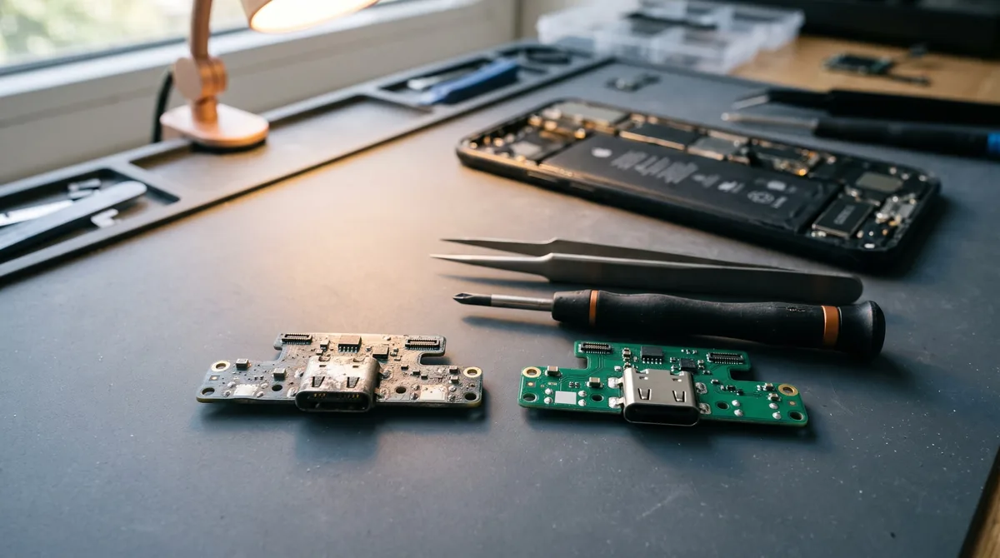
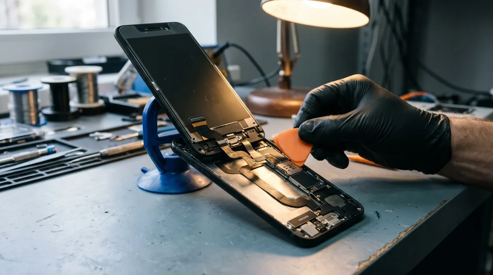

Замена разъёма зарядки на телефоне: Android, iPhone, планшеты
Телефон заряжается, только если придержать провод пальцем. Или штекер болтается и выпадает. Или зарядка то появляется, то пропадает, и смартфон пикает от каждого движения кабеля. С этим к нам в мастерскую в Мариуполе приходят чаще всего, и обычно уже с мыслью, что нужна замена разъема зарядки.
Иногда так и есть. Но часто разъём целый, просто за год-два в нем набилось столько пыли из кармана, что штекер не входит до конца. Тогда хватает чистки: она занимает 15 минут и стоит в разы дешевле. Ниже — как отличить одно от другого, что меняют на разных смартфонах и сколько это длится.
Как понять, что дело в разъёме
На это мы смотрим в первую очередь, если:
- телефон заряжается только под определённым углом или если прижать штекер;
- штекер входит не до конца, нет чёткого щелчка, кабель выпадает от лёгкого движения;
- зарядка то есть, то нет — устройство постоянно пикает или вибрирует;
- заряжается очень медленно, быстрая зарядка перестала включаться;
- компьютер не видит девайс или соединение рвётся;
- Samsung пишет «Обнаружена влага», хотя телефон сухой;
- внутри соединителя виден зелёный или белый налёт.
Прежде чем нести технику к нам, исключите кабель и блок питания. Это минутное дело: возьмите заведомо рабочий провод, например от телефона кого-то из домашних, а свой проверьте на другом смартфоне. Перетёртый у соединителя провод даёт ровно те же симптомы, что и сломанное гнездо.
Если телефон умеет заряжаться без провода, есть ещё одна проверка. Положите его на беспроводную зарядку. Если там всё в порядке, аккумулятор и цепь питания, скорее всего, живы, и проблема именно в штекере или его шлейфе. Если девайс не заряжается никак, разъём может быть ни при чём: так же ведут себя изношенный аккумулятор или неисправный контроллер питания на плате. Тут нужна диагностика, а не ремонт наугад.
Сначала чистка — часто её хватает

Каждый раз, когда вы вставляете штекер, он заталкивает пыль и ворс из кармана на дно гнезда и утрамбовывает их. Через пару лет там лежит плотный серый войлок толщиной в миллиметр-полтора. Коннектор упирается в него и не достаёт до контактов.
Проверить просто: посветите в коннектор фонариком. Если на дне видно серый слой, начинать надо с чистки.
Дома это можно сделать самому:
- Выключите смартфон.
- Возьмите деревянную зубочистку. Металл не подходит: иголка или скрепка поцарапают контакты, а в Type-C можно погнуть пластинку в центре соединителя.
- Аккуратно выскребайте мусор вдоль дна и стенок, не нажимая на контакты. Выйдет больше, чем кажется.
- Не дуйте в коннектор — с дыханием туда попадает влага. Спирт тоже не заливайте.
Если после этого коннектор входит с чётким щелчком и не болтается — готово. Если нет, контакты стёрлись или разъём отошёл от платы. Тогда его нужно менять.
В мастерской мы все под микроскопом и заодно снимают окислы с контактов. Всегда начинаем с этого: если чистка помогла, менять ничего не нужно. Это касается и коннекторов после воды — налёт иногда удаётся снять без замены.
Что именно меняют: Type-C, micro-USB, Lightning
Само гнездо — мелкая деталь. Но на разных устройствах оно крепится по-разному, и от этого зависит, сколько займёт ремонт.
Android: отдельная плата
У большинства современных девайсов на Android — Samsung Galaxy серии A, Xiaomi, Redmi, Poco, Tecno, Infinix, Honor, Realme — гнездо Type-C стоит на маленькой отдельной плате внизу корпуса. С основной микросхемой её соединяет длинный шлейф. На этой же плате часто стоит микрофон.
Здесь меняют схему целиком, и это самый простой вариант: снять заднюю крышку (часто она на клею), открутить защиту, поставить новую плату и собрать. Основную плату никто не трогает.
Андроид: штекер запаян на основную плату
На старых и части бюджетных моделей, а также почти на всех кнопочных с micro-USB гнездо впаяно прямо в основную плату. Тогда старую деталь выпаивают и ставят новый. Нужны паяльная станция и аккуратность. Если выход уже вырвали вместе с контактными площадками, сначала восстанавливают дорожки. Работа дольше, но обычно укладывается в один день.
iPhone: меняют нижний шлейф

На айфоне эта деталь — часть шлейфа, на которой стоят ещё и микрофоны. Отдельно гнездо не меняют, ставят новую деталь целиком. Начиная с iPhone X, для этого снимают экран, а также динамик и вибромотор, которые закрывают доступ к детали. Экран на этих моделях держится на клеевой прокладке, поэтому при сборке мы ставим новую.
Честно о влагозащите: после любого вскрытия она уже не такая, как с завода, даже с новой прокладкой. Дождь устройство выдержит, но купать его не стоит.
Замена разъёма зарядки на планшете
На планшетах он чаще всего запаян на основную микросхму или стоит на длинном шлейфе. Экран почти всегда на клею и большой. Снимать его нужно с подогревом и осторожно, иначе стекло треснет. Поэтому восстановление занимает больше времени, чем на смартфоне, — обычно от одного дня.
Замена на Айфоне
На всех Айфонах меняется нижний шлейф целиком. Различаются тип устройства и сложность разборки.
| Модель | Гнездо | Что учесть |
|---|---|---|
| 6, 6s, 6s Plus | Lightning | Экран не на клею, разборка проще всего |
| 7, 7 Plus, 8, 8 Plus | Lightning | Экран на клеевой прокладке, при сборке ставим новую |
| X, XS, XS Max, XR | Lightning | Снимаем экран, динамик и вибромотор |
| 11, 11 Про, 11 Про Макс | Lightning | Так же. Одна из самых частых моделей в ремонте |
| 12, 12 mini, 12 Про, 12 Про Макс | Lightning | Так же |
| 13, 13 mini, 13 Pro, 13 Pro Max | Лайтининг | Так же |
| 14, 14 Plus, 14 Pro, 14 Pro Max | Лайтининг | Последнее поколение с Лайтининг |
| 15, 15 Plus, 15 Про, 15 Про Макс | USB-C | Подходит обычный Тайп Си |
| 16, 16 Plus, 16 Про, 16 Про Макс, 16e | USB-C | Подходит обычный Тайп Си |
| 17, 17 Про, 17 Про Макс, iPhone Air | USB-C | Наличие запчасти уточняйте по телефону |
Если у вас Айфон 15 или новее и он плохо заряжается, сначала проверьте кабель. USB-C от Android подойдёт, но дешёвые часто не держат нужный ток.
Сколько времени занимает
| Работа | Время |
|---|---|
| Чистка | 15–30 минут, при вас |
| Замена микросхемы на Android | около часа |
| Перепайка на основной схеме | 1–2 часа |
| Замена шлейфа на iPhone | 1–2 часа |
| Планшет | от одного дня |
Это время при наличии запчасти. Ходовые запчасти обычно есть, для редких вариантов заказываем — тогда ремонт сдвигается на 1–2 дня. Чтобы не ехать зря, позвоните заранее и назовите модель: скажем, есть ли деталь.
Фото, контакты и переписки при восстановлении не пропадают: память смартфона не затрагивается.
Сколько стоит замена разъёма
Точную цену называем по модели. Позвоните или напишите в Telegram — это займёт минуту. Из чего складывается стоимость:
- Как крепится деталь. Замена схемы обычно дешевле перепайки, а на iPhone цена зависит от шлейфа.
- Модель и запчасть. Микросхема для популярного Redmi или Samsung Galaxy A и шлейф для 15 Pro стоят по-разному.
- Оригинал или аналог. Для многих есть оба варианта, выбираете вы.
- Что ещё повреждено. Окислы после воды, сорванные контактные площадки, следы чужого ремонта.
Цену согласуем до начала работы. Если на диагностике окажется, что хватит чистки, ремонтировать ничего не будем и возьмём деньги только за очистку.
Как не сломать новый разъём
- Не сидите в телефоне лёжа, когда провод упирается в подушку или изгибается у самого штекера.
- Вынимайте провод за штекер, а не дёргайте за провод.
- Раз в несколько месяцев светите в разъём фонариком. Пыль проще убрать, пока её мало.
- Не заряжайте девайс, если он или провод мокрые.
Вопросы
Можно ли заряжать телефон по беспроводной, пока его не починили?
Да, если устройство это поддерживает.
Почему после ремонта устройство всё равно не заряжается?
Значит, причина в аккумуляторе или контроллере питания. Поэтому мы сначала проверяем девайс и только потом заменяем деталь. Диагностика у нас бесплатная.
Меняете ли разъём на Samsung и Xiaomi?
Да, это частая работа. На большинстве Samsung Galaxy A и Xiaomi, Redmi, Poco меняется отдельная микросхема.
Есть ли гарантия?
Да, мы даём гарантию. Срок указываем в квитанции.
Ремонтируем технику в Мариуполе каждый день с 10:00 до 20:00. Можно приехать или вызвать мастера: в Левобережный район выезд бесплатный. Звоните: +7 949 609-06-43.